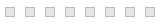

Azure DevOps Services 檔案下載
PAT：
到期日是2025/09/02，
如何取得 PAT
，
更新Token
，
說明
Azure DevOps Services URL：
https://dev.azure.com/ricky9075
檔案路徑（TFVC）：
/Ricky/RickyTF/Music/DingCanntTakeMyEyesOfYou.mp3
下載檔案

資料處理中